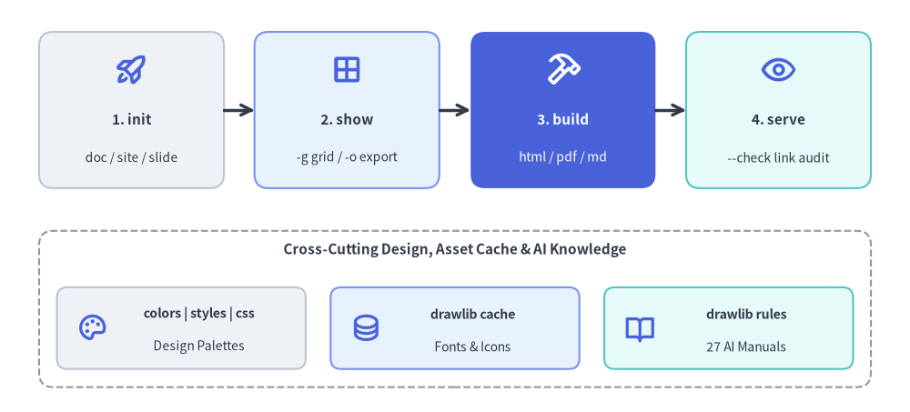
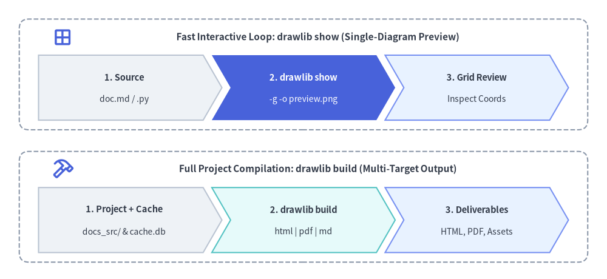

CLI Reference Manual
Drawlib provides a unified Command Line Interface (drawlib) for compiling documentation, extracting standalone visual diagrams, managing cache assets, validating links, and inspecting built-in design systems.

Source Code
from drawlib.canvas import save, setup
from drawlib.icons import phosphor
from drawlib.lines import line
from drawlib.shapes import rectangle
from drawlib.styles import Styles
from drawlib.text import text
setup(width=128, height=58)
# Top Row: Primary 4-Stage Authoring & Publishing Pipeline
stages = [
(18.5, "1. init", "doc / site / slide", Styles.Neutral, Styles.DarkBold, Styles.Dark, phosphor.rocket_launch, Styles.PrimaryBold),
(48.8, "2. show", "-g grid / -o export", Styles.PrimaryNeutral, Styles.DarkBold, Styles.Dark, phosphor.grid_four, Styles.PrimaryBold),
(79.2, "3. build", "html / pdf / md", Styles.PrimaryFlat, Styles.WhiteBold, Styles.White, phosphor.hammer, Styles.WhiteBold),
(109.5, "4. serve", "--check link audit", Styles.SecondaryNeutral, Styles.DarkBold, Styles.Dark, phosphor.eye, Styles.PrimaryBold),
]
for sx, title, sub, st, tst, sub_st, icon_fn, icon_st in stages:
rectangle((sx, 42.5), width=26, height=22, style=st.patch(shape_r=2.0))
icon_fn((sx, 48.2), width=4.8, style=icon_st)
text((sx, 41.2), title, style=tst.patch(text_size=11.0))
text((sx, 35.8), sub, style=sub_st.patch(text_size=10.0))
line((31.5, 42.5), (35.8, 42.5), arrow_head="->", style=Styles.DarkBold)
line((61.8, 42.5), (66.2, 42.5), arrow_head="->", style=Styles.DarkBold)
line((92.2, 42.5), (96.5, 42.5), arrow_head="->", style=Styles.DarkBold)
# Bottom Row: Supporting Design Systems, Cache & AI Rules Subcommands
rectangle((64, 14.5), width=117, height=22, style=Styles.MutedDashed.patch(shape_r=2.0))
text((64, 22.8), "Cross-Cutting Design, Asset Cache & AI Knowledge", style=Styles.DarkBold.patch(text_size=11.0))
bottom_cards = [
(25.5, "colors | styles | css", "Design Palettes", Styles.Neutral, phosphor.palette),
(64.0, "drawlib cache", "Fonts & Icons", Styles.PrimaryNeutral, phosphor.database),
(102.5, "drawlib rules", "27 AI Manuals", Styles.SecondaryNeutral, phosphor.book_open),
]
for bx, btitle, bsub, bst, bicon in bottom_cards:
rectangle((bx, 11.8), width=35, height=11.5, style=bst.patch(shape_r=1.5))
bicon((bx - 12.5, 11.8), width=4.4, style=Styles.PrimaryBold)
text((bx + 2.5, 13.8), btitle, style=Styles.DarkBold.patch(text_size=10.2))
text((bx + 2.5, 9.2), bsub, style=Styles.Dark.patch(text_size=10.0))
save()
1. Quick Command Matrix
# Compilation
drawlib build html docs_src/ -o docs_html/ # Responsive static HTML website
drawlib build markdown docs_src/ -o docs/ # GitHub-ready Markdown
drawlib build pdf docs_src/ -o manual.pdf --toc # High-fidelity vector PDF
drawlib build image scripts/ -o assets/ -g # Batch Python image rendering
# Scaffolding
drawlib init list # List starter project templates (site, doc, slide, images)
drawlib init doc my_doc # Scaffold linear document project (HTML, PDF, MD, images)
drawlib init site my_site # Scaffold documentation site
drawlib init slide my_deck -s google # Scaffold 16:9 presentation slide deck
drawlib init images my_images # Scaffold standalone images project (alias: image)
# Inspection & Preview
drawlib show doc.md # List all drawlib code blocks in doc.md
drawlib show doc.md arch.png -o .drawlib/scratch/arch.png # Headless extraction by explicit filename (Recommended)
drawlib show doc.md arch.png -g -o .drawlib/scratch/arch_grid.png # Export named block with coordinate grid
drawlib show script.py -o .drawlib/scratch/fig.png # Export standalone Python script
# Local Server & Verification
drawlib serve docs_html/ # Local preview on http://localhost:8000
drawlib serve docs_html/ --check # Pre-flight broken link/asset audit
# Design Systems, Cache & AI Rules
drawlib colors list # List color catalogs (default, google, monochrome, css)
drawlib styles list # List style catalogs (default, google, monochrome)
drawlib css list # List CSS presets for HTML and PDF
drawlib cache list # Inspect cached fonts, icons, and maps
drawlib rules list # List 27 AI rule instruction manuals
2. Global CLI Options
Global flags apply before any top-level command (drawlib [GLOBAL_OPTIONS] COMMAND ...):
| Flag | Description |
|---|---|
-v, --version |
Print installed drawlib version and exit with status 0. |
-h, --help |
Show contextual help message and available subcommands. |
--quiet |
Suppress non-critical standard output (emit warnings and errors only). |
--verbose / --debug |
Enable diagnostic logging, timing metrics, and cache hit/miss details. |
--developer |
Enable verbose logging and disable user-friendly error wrapping so full Python stack traces propagate. |
(Note: --quiet cannot be combined with --verbose, --debug, or --developer; doing so exits with code 2.)
3. Compilation Subsystem (drawlib build)

Source Code
from drawlib.canvas import save, setup
from drawlib.icons import phosphor
from drawlib.shapes import rectangle
from drawlib.smartarts import ChevronProcess
from drawlib.styles import Styles
from drawlib.text import text
setup(width=126, height=58)
# Top Panel: Fast Interactive Loop (drawlib show)
rectangle((63, 42.5), width=118, height=23, style=Styles.MutedDashed.patch(shape_r=2.0))
phosphor.grid_four((13, 50.2), width=4.4, style=Styles.PrimaryBold)
text(
(66, 50.2),
"Fast Interactive Loop: drawlib show (Single-Diagram Preview)",
style=Styles.DarkBold.patch(text_size=11.0),
)
show_flow = ChevronProcess(
style=Styles.Neutral,
text_style=Styles.DarkBold.patch(text_size=10.5),
description_style=Styles.Dark.patch(text_size=10.0),
corner_angle=60.0,
spacing=1.8,
flat_left_end=True,
)
show_flow.add("1. Source", description="doc.md / .py")
show_flow.add(
"2. drawlib show",
description="-g -o preview.png",
style=Styles.PrimaryFlat,
text_style=Styles.WhiteBold.patch(text_size=10.5),
description_style=Styles.White.patch(text_size=10.0),
)
show_flow.add("3. Grid Review", description="Inspect Coords", style=Styles.PrimaryNeutral)
show_flow.draw(xy=(8, 33.0), width=110, height=13.5)
# Bottom Panel: Full Project Compilation (drawlib build)
rectangle((63, 15.0), width=118, height=23, style=Styles.MutedDashed.patch(shape_r=2.0))
phosphor.hammer((13, 22.8), width=4.4, style=Styles.PrimaryBold)
text(
(66, 22.8),
"Full Project Compilation: drawlib build (Multi-Target Output)",
style=Styles.DarkBold.patch(text_size=11.0),
)
build_flow = ChevronProcess(
style=Styles.Neutral,
text_style=Styles.DarkBold.patch(text_size=10.5),
description_style=Styles.Dark.patch(text_size=10.0),
corner_angle=60.0,
spacing=1.8,
flat_left_end=True,
)
build_flow.add("1. Project + Cache", description="docs_src/ & cache.db")
build_flow.add(
"2. drawlib build",
description="html | pdf | md",
style=Styles.SecondaryNeutral,
)
build_flow.add("3. Deliverables", description="HTML, PDF, Assets", style=Styles.PrimaryNeutral)
build_flow.draw(xy=(8, 5.5), width=110, height=13.5)
save()
3.1 drawlib build html
Compiles Markdown documents or directories into a responsive static HTML documentation website (site when navbar.md is present) or merged single-page HTML document (doc when navbar.md is absent).
drawlib build html <INPUT> [OPTIONS]
| Option | Shorthand | Default | Description |
|---|---|---|---|
--output |
-o |
<input_dir> or <name>.html |
Destination directory or HTML file path. |
--format |
-f |
png |
Image format for embedded diagrams (png or webp). |
--styles |
-s |
Auto-resolved styles.py |
Path to project styles script. |
--utils |
-u |
Auto-resolved utils.py |
Path to helper drawing script. |
--no-cache |
False |
Force clean diagram rendering, ignoring .drawlib/cache.db. |
3.2 drawlib build markdown
Compiles source Markdown containing embedded drawlib blocks into standard GitHub-Flavored Markdown. Rendered diagrams are exported to companion image folders (<doc>_images/).
drawlib build markdown docs_src/ -o docs/ [OPTIONS]
- Supports
-o/--output,-f/--format <png|webp>,-s/--styles,-u/--utils, and--no-cache. - Overwrite Protection: Refuses to overwrite source files in-place (
src_abs == dest_abs). Always compile to a distinct output directory (e.g.docs/ordocs_markdown/).
3.3 drawlib build pdf
Merges Markdown chapters or slide decks into a high-fidelity vector PDF using headless Chromium via Playwright (pip install "drawlib[pdf]" and playwright install chromium).
drawlib build pdf docs_src/ -o report.pdf --toc --page-break
| Option | Shorthand | Default | Description |
|---|---|---|---|
--output |
-o |
<first_stem>.pdf |
Destination PDF file path. |
--title |
Extracted from H1 | Overall document title displayed on cover and running headers. | |
--generate-index |
--toc |
False |
Insert an automated Table of Contents between the 1st (00_cover.md) and 2nd chapter. |
--page-break / --no-page-break |
True |
Insert CSS page breaks (page-break-before: always) between chapters. |
|
--styles / --utils |
-s / -u |
Auto-resolved | Path to styles.py and utils.py. |
--no-cache |
False |
Bypass .drawlib/cache.db and re-render all diagrams. |
|
--timestamp |
False |
Include current build timestamp in PDF metadata (omitted by default for deterministic builds). |
3.4 drawlib build image
Batch executes standalone Python illustration scripts (.py) or extracts embedded drawing blocks from Markdown files (.md) to generate image assets.
drawlib build image images_src/ -o images/ --grid
| Option | Shorthand | Default | Description |
|---|---|---|---|
--output, --output-dir |
-o |
None |
Output file path (single script) or destination directory. |
--format |
-f |
Script setting (png) |
Global output image format override (png, webp, jpg, pdf). |
--styles / --utils |
-s / -u |
Auto-resolved | Path to styles.py and utils.py. |
--grid |
-g |
False |
Save companion *_grid.<ext> images overlaid with coordinate grids. |
--disable-auto-clear |
False |
Disable automatic canvas.clear() between executed .py files. |
|
--enable-auto-initialize |
False |
Enable full canvas re-initialization between executed .py files. |
|
--no-cache |
False |
Bypass .drawlib/cache.db. |
- Python Scripts: Redirects
save()outputs into-o, mirroring nested subdirectory structures automatically. Performs pre-execution static AST analysis across all scripts and aborts immediately if two scripts would write to the same output file. - Markdown Files: Extracts embedded
drawlibblocks into<markdown_name>_images/<image_file>subdirectories.
4. Scaffolding Subsystem (drawlib init)
Bootstraps new projects with standardized folder structures, configuration scripts, and build automations:
drawlib init <TYPE> [target] [OPTIONS]
drawlib init list
<TYPE>: Subcommand choosing project type:doc,site,slide,images(alias:image), orlist.[target]: Base name for the project and source folder (creates<target>_src/). Defaults:docfordoc,docsforsite,slideforslide,imagesforimages.-s,--style <theme>: Style preset theme (default,google,monochrome, etc.) synchronously configuring bothstyle.cssandstyles.py.-l,--lang <code>: Starter content and font configuration language (en,ja,zh-cn,ko,th,hi, etc.). Default:en.-f,--force: Overwrite existing files if destination directory already exists.
5. Single Diagram Extraction & Preview (drawlib show)
Lists embedded blocks in a document, previews a diagram in a desktop GUI window, or exports it headlessly to disk when -o is supplied:
# 1. List all drawlib blocks in a Markdown document (when [TARGET] is omitted):
drawlib show docs_src/overview.md
# 2. Export block by explicit filename with coordinate grid (Recommended):
drawlib show docs_src/overview.md arch.png -g -o .drawlib/scratch/arch_grid.png
# 3. Export block by 1-based index (or -1 for the last block in the file):
drawlib show docs_src/overview.md 1 -g -o .drawlib/scratch/fig1.png
drawlib show docs_src/overview.md -1 -o .drawlib/scratch/last_fig.png
# 4. Preview standalone Python script in interactive GUI window:
drawlib show my_drawing.py
Supports -o/--output, -g/--grid, -s/--styles, -u/--utils, and --no-cache.
6. Local Server & Pre-Flight Link Checking (drawlib serve)
Starts a zero-dependency local HTTP development server (Cache-Control: no-store) to preview built HTML documentation:
# Start server on default port 8000 (runs link check first and opens browser):
drawlib serve docs_html/
# Custom port without opening browser:
drawlib serve docs_html/ -p 8080 --no-browser
# Pre-flight broken link and missing asset check only (exits 0 if clean, 1 if broken):
drawlib serve docs_html/ --check
# Start server immediately without running pre-flight link scan:
drawlib serve docs_html/ --skip-check
7. Design Systems, Stylesheets & Asset Cache (css, colors, styles, cache)
7.1 CSS Stylesheet Presets (drawlib css)
drawlib css list [html|pdf] # List built-in CSS themes and target support
drawlib css show html google # Print synthesized Google HTML CSS to terminal
drawlib css show html google -o docs_src/style.css --force # Export preset to file
7.2 Color & Style Visual Catalogs (drawlib colors & drawlib styles)
# Color palettes (default, google, monochrome, css):
drawlib colors list
drawlib colors show google --sort hsv -g -o .drawlib/scratch/colors_google.png
# Style matrices (default, google, monochrome):
drawlib styles list
drawlib styles show google 1 -o .drawlib/scratch/styles_google_p1.png
drawlib styles show default --all -o .drawlib/scratch/styles_default.png
drawlib styles show default -c blue -o .drawlib/scratch/styles_blue.png
7.3 Cache Management (drawlib cache)
drawlib cache list # Inspect font, icon, and map packages and local cache size
drawlib cache download --all # Pre-download all font, icon, and map packages for offline/CI use
drawlib cache download --fonts # Pre-download font packages only
drawlib cache download --icons # Pre-download icon packages only
drawlib cache clear --images # Clear SQLite build & CLI image cache (.drawlib/cache.db)
drawlib cache clear --all # Clear all caches (fonts, icons, maps, and .drawlib/cache.db)
8. AI Rules Catalog (drawlib rules)
Inspect built-in architectural and library manuals (with on-demand companion illustration rendering into _cached_assets/rules/) from the terminal:
drawlib rules list # List all 31 rule topics and cache status
drawlib rules show agent-instruction # View AI agent bootstrap manual
drawlib rules show overview # View Cartesian geometry principles
drawlib rules show style-guide # View 50%+ neutral baseline & semantic color rules
drawlib rules show review-guide # View 3-stage multimodal review loop & 720pt font math
drawlib rules show anim-guide # View animation idioms across all modules
drawlib rules show project-overview # View 4 project archetypes & shared architecture
drawlib rules show project-site # View multi-page website authoring & navbar.md rules
drawlib rules show project-slide # View 1920x1080 slide authoring & stage rules
drawlib rules show lib-graph # View declarative graph layout solvers
drawlib rules show lib-diagrams --raw # Output raw Markdown without building/checking cache
drawlib rules show lib-shapes --rebuild # Force regenerate companion rule illustrations
drawlib rules build --all # Pre-build illustrations for all 31 rule topics
drawlib rules clear # Delete cached rule documents and generated images
9. CLI Exit Codes
| Exit Code | Meaning | Common Causes |
|---|---|---|
0 |
Success | Command completed normally (--check passed with 0 broken links). |
1 |
Build / Execution Error | Missing mandatory files (index.md, navbar.md), Python exception in a drawlib block, duplicate output collision, or broken links detected by drawlib serve --check. |
2 |
Bad Parameter / Usage Error | Conflicting CLI flags (e.g. --quiet with --verbose), unknown subcommand, or missing required argument. |